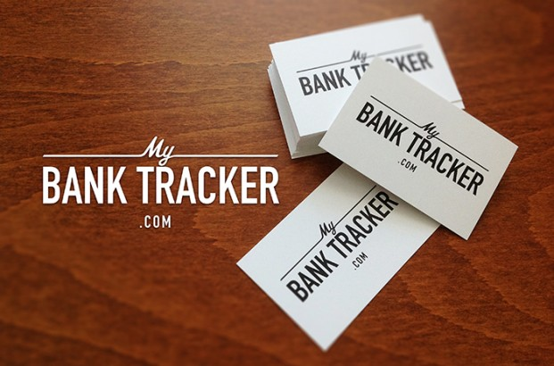

Expense Analysis
- Your expenses will be automatically categorized and displayed in a graph so you can see your finances and gain valuable insight into your spending habits.
Manage Budget
- Your RBC Royal Bank® account and credit card transactions are automatically loaded into pre-set and customizable budget categories so you can track where your money is going and how much money you have available to spend or to save.
- Create customized budget goals for your most common expenses, so you can plan ahead and stay on track to save for that something special, whether it’s a new home, car or your children’s education.
Financial Calendar
- See all your bills, transactions and account balances for a given month.
Accounts
- Get a consolidated view of your RBC® accounts and your linked accounts with other financial institutions. You can directly access the available transactions and trends for each account.
myApp Store
- Choose the financial Apps that will help you stay on track towards achieving your goals. Your Apps can be placed either onto your dashboard or another myFinanceTracker page.
Dashboard
- Grab the Applications you like from myApps and move them to your Dashboard. View the information that is most important to you from a single page.
Save for a Goal
- Define your long- and short-term goals and create a savings plan towards each one. Your progress will be charted to help you stay on track.